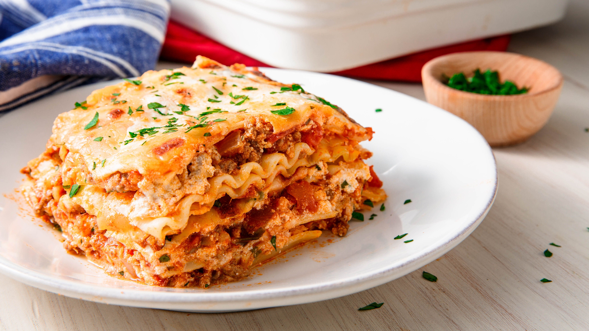

Lasagna

Description
Lasagna is a classic Italian comfort food made with layers of tender pasta noodles, savory tomato sauce, and a rich and creamy cheese filling.
Typically made with ground beef or Italian sausage, lasagna can also be customized with vegetables, different types of meat, or even seafood.
Perfect for feeding a crowd, this hearty and satisfying dish is a true crowd-pleaser that's sure to become a family favorite.
Whether you're a seasoned cook or a novice in the kitchen, lasagna is a timeless recipe that's easy to make and always delicious.
Ingredients
- Lasagna noodles
- Ground beef or Italian sausage
- Crushed tomatoes
- Tomato sauce
- Tomato paste
- Onion
- Garlic
- Salt and pepper
- Dried basil
- Dried oregano
- Ricotta cheese
- Shredded mozzarella cheese
- Grated parmesan cheese
- Egg
- Olive oil
Steps
-
Preheat the oven to 375°F (190°C).
-
Cook the lasagna noodles according to package instructions, then drain and set aside.
-
Brown the ground beef or sausage in a large skillet over medium heat, then add garlic and onions and cook until softened.
-
Stir in canned crushed tomatoes, tomato sauce, and tomato paste, then add salt, pepper, and Italian seasoning to taste. Simmer for 10-15 minutes.
-
In a separate bowl, combine ricotta cheese, shredded mozzarella cheese, grated Parmesan cheese, and chopped fresh parsley.
-
Spread a thin layer of the meat sauce in the bottom of a large baking dish.
-
Add a layer of cooked lasagna noodles on top of the sauce, then spread a layer of the cheese mixture over the noodles.
-
Repeat the layers of sauce, noodles, and cheese until all ingredients are used up, making sure to end with a layer of sauce on top.
-
Cover the lasagna with foil and bake for 25 minutes.
-
Remove the foil and bake for an additional 25 minutes, or until the cheese is melted and bubbly and the noodles are tender.
-
Let the lasagna cool for a few minutes before slicing and serving.